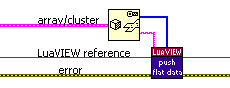
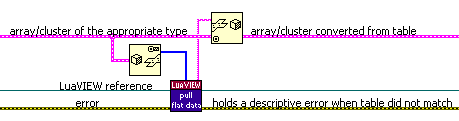
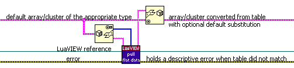
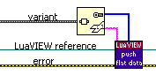
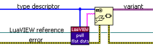
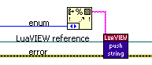
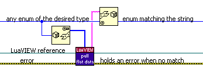

Data can be passed between the Lua and LabVIEW side by means of a Lua stack. To pass data to Lua, use Push (poly) to push data onto the stack. To retrieve data from Lua, use Pull (poly) to pull elements off the stack. Both VIs are polymorphic and allow the type of data being pushed or pulled to be selected. This document details which types are supported and what conversions are made when translating them between Lua and LabVIEW:
Lua has just one numerical type, the "number" type, which uses double precision floating point representation. This implies that it can store all the LabVIEW integer types as well as single and double precision floats without loss of information. Use Push (number) and Pull (number) for both singles (wire with conversion dots) and doubles. All LabVIEW integer types have corresponding push and pull VIs. The "lv" C library contains functions to perform bit-wise and overflow-sensitive operations on Lua numbers that hold integer values.
To avoid unintended information loss, no push and pull support is provided for extended precision floats, complex numbers, physical numbers (with associated units), and 128-bit timestamps. If such types must be passed and the information loss is tolerable, wire an explicit conversion to/from a supported type before/after pushing or pulling.
Lua has a string type that is precisely compatible with LabVIEW strings: like a LabVIEW string, a Lua string can be of arbitrary length and hold all 8 bit character values, including null characters. Use Push (string) and Pull (string) to pass strings to/from Lua.
Both LabVIEW and Lua have Boolean types. Use Push (boolean) and Pull (boolean) to pass Booleans to/from Lua.
Compound data (a combination of more primitive data elements) such as an array or cluster can be represented using a Lua table. To remove the need for passing such data element-by-element, LuaVIEW provides Push (flat data) and Pull (flat data) for pushing and pulling compound data. These functions require a type descriptor as can be obtained from "Flatten To String", "Variant To Flattened String", or the "Type Descriptor" control/indictor property. To understand what these VIs do it helps to think of Push (flat data) as "Unflatten To Lua" and Pull (flat data) as "Flatten From Lua". By combining them with their LabVIEW unflatten and flatten complements, compound data of arbitrary complexity and nesting can be passed.
To push an array or cluster to Lua, first use "Flatten To String":

To pull and array or cluster from Lua while requiring that it be fully specified, convert the pulled flat data using "Unflatten From String" and leave the default data input unwired:

Note that there is no need to examine the error output of "Unflatten From String" since the pull is guaranteed to either return valid flat data matching the type descriptor, or an error and an empty string. To pull an array or cluster with optional substitution of default data, proceed as follows:

When the stack is empty or contains a nil, the entire default array/cluster is substituted. When a cluster is required, and the table is lacking some entries corresponding to cluster elements, the appropriate elements will be substituted from the default cluster. Think of it as a "Bundle By Name" that does not specify all cluster elements. This also works for nested clusters, but not for clusters contained in arrays.
To push a variant without any attributes it may have, first use "Variant To Flattened String":

To pull data into a variant, convert the pulled flat data using "Flattened String To Variant":

Be sure to wire the variant output before testing your VI: there is a null pointer bug in LabVIEW 7.0 that manifests itself when executing "Flattened String To Variant" without a wired variant output.
The flat data push and pull VIs come in reentrant and non-reentrant versions that are otherwise equivalent. When lots of compound data is to be pushed or pulled, use the reentrant version so that the non-reentrant variant is never blocked for a prolonged time. Solely using the reentrant version is sure to prevent contention, but reentrant VIs use up more memory, particularly when placed on the diagram of a VI that is a template or itself reentrant. In general, the optimum compromise is to use reentrant VIs only when there is a real risk of contention.
Since Lua cannot represent all types that LabVIEW can, and vice versa, there are some restrictions on the compound data that can be handled:
{{1,2},{3,4}} is valid and the
table
{{1,2},{3}} is invalid.When one of these restrictions is violated, a descriptive error will be returned. There are also a couple of instances where there are less restrictions on the data than you might expect:
Note that Lua tables with string keys as used for clusters do not have a defined entry order: the keys are hashed for speedy lookup. When you need to process entries based on the cluster order, use the include cluster order option of Push (flat data).
Lua does not have an enum type. However, it is possible to convert an enum value into a string. The reverse is possible as long as the string corresponds to one of the enum items. Thus, it is possible to represent any LabVIEW enum as a Lua string. Representing the enum as a Lua number is not desirable since this makes for less readable scripts that become outdated when items are added or removed from the LabVIEW enum definition.
To push an enum as a string to Lua use "Format Into String" followed by Push (string) as follows:

To pull a string as an enum from Lua, use "Flatten To String", Pull (flat data), and "Unflatten From String" as follows:

When pushing and pulling compound data containing an enum, the conversion to/from a string happens automatically. When a LuaVIEW function has an enum parameter or result, the calling synopsis should specify a str typecode.
LabVIEW paths are represented with Lua strings. Use
Push (path) to push a Lua string converted from a LabVIEW path. The
conversion is identical to LabVIEW's "Path to String" conversion
function. Use Pull (path) to pull a Lua string and convert it into a LabVIEW path. By
default, any occurrences of "\" and "/" in the string are
first substituted with the platform-specific path separator. This behaviour may not
be desirable because "\" and "/" can occur in file or
directory names on some platforms. To disable substitution, use
lv.substitute_separators().
The further string to path conversion is identical to LabVIEW's "String to
Path" conversion function. When passing paths as part of compound data, the
same conversions are performed on pushing and pulling. When a LuaVIEW
function has a path parameter or result, the calling
synopsis should specify a str typecode. Note that including a "\" in a string can be tricky because Lua
uses backslash as the escape character inside quoted strings. Either escape
the backslash, e.g. "foo\\bar", or use a verbatim string, e.g. [[foo\bar]].
If you do not care about script portability, specify platform-specific
paths as part of scripts and disable separator substitution. When script
portability is important, the conversion of "\"
and "/", allows either to be used as a valid separator for all
platforms. The substitution with the platform-specific separator is done
automatically when pulling a path to LabVIEW.
When passing a path to a C function (e.g. one of the functions in the "io" library) no
substitution is performed. To force a conversion use the lv.topath()
function. To assist with constructing valid paths through string concatenation, the global _SEP is defined when opening a LuaVIEW state. It holds the platform-specific
path separator character as a string.
Relative directory paths specified as string constants are not portable to the Mac: on Linux and Windows, relative paths start without a separator, on the Mac, a relative path must start with a separator. There are a few example scripts that include such paths. Add a leading separator in order to make them work on the Mac as well. Since Mac OS X is UNIX-based, it might well be that future LabVIEW versions for the Mac will adopt the UNIX path conventions. Note that the LabVIEW path data type is perfectly portable. An alternative road to portability is therefore to store paths on the LabVIEW side and have scripts fetch them as required.
LabVIEW refnums come in all kinds of flavours. Most are represented as a 32-bit value (the ones with thin grey-green wires). 32-bit refnums typically reflect C/C++ objects or data structures that are not meant to be visible to LabVIEW. In Lua, there is not much that can be done with refnums other than pass them back to LabVIEW. In particular, it is not allowed to modify refnums or otherwise interpret their value. To make this impossible, 32-bit refnums are represented on the Lua side as a "light user data", which is an opaque 32 bit value. Two such values can be compared for equality when they belong to the same flavour. Refnums belonging to different flavours are not guaranteed to have different values.
To pass a single 32-bit refnum to and from Lua, one option is to use Push (refnum) or Pull (refnum) respectively. These VIs allow a "Generic" refnum to be passed. A specific flavour of 32-bit reference will therefore need to be converted to/from the "Generic" class before/after pushing/pulling. When the refnum you must pass is in a subclass of "Generic", it is possible to use "To More Specific Class" after pulling and "To More Generic Class" before pushing. When the refnum is part of a different class hierarchy, LabVIEW requires some more persuasion. See the implementation of Cast VI Ref to Gen Ref for an example of how this can be made to work. Alternatively, 32-bit refnums can be passed as flat data, be it single refnums or as part of compound data. Most flavours are supported by Push (flat data) and Pull (flat data). To see if a flavour is supported, simply try to to push it as flat data. When this does not result in an error, it is supported. Be sure to not pull a refnum as the wrong flavour: though LabVIEW is likely to complain when given such a refnum, there is a small chance of terminal confusion.
When you have some LabVIEW data structure that is not meant to be visible to Lua and can be referenced via a 32-bit value, for example an array index that points to that data structure, an interesting option is to pass it as a 32-bit refnum to Lua. By using a refnum instead of a 32-bit integer, you make explicit that the value is opaque and make it impossible for Lua to interpret or modify the value.
Some LabVIEW refnums are represented internally as a string value (the ones with thick purple-brown wires). VISA resource names and IVI logical names are examples of such refnums. String refnums typically reflect an instrument connected to some bus. The bus driver usually enumerates the connected instruments and assigns names to them. On Windows, this process can be monitored and influenced using the "Measurement and Automation Explorer" (MAX). As long as the set of connected instruments, their IDs (if any), and the MAX configuration are not changed, these refnum strings (resource names) can be assumed to remain invariant.
On the Lua side, string refnums are also represented as strings. String refnums, be it single refnums or as part of compound data, can be passed as flat data. Most flavours are supported by Push (flat data) and Pull (flat data). To see if a flavour is supported, simply try to to push it as flat data. When this does not result in an error, it is supported.
When you have some LabVIEW-side object/data, and it must be possible to operate on or access information about this object/data from the Lua side, it is often convenient (for script authors) to be able to treat it as if it were a true Lua object. To this end, it is possible to create a "LuaVIEW object" using Push (object). Such objects hold a 32-bit refnum to identify your LabVIEW-side object or data, and have an optional attached method table holding LuaVIEW functions that operate on that type of object. In addition, you can attach read-only attributes to the object using Set Object Attribute. Such objects are represented as "user data" in Lua, and are passed by reference.
Given a LuaVIEW object, you can use the Lua method calling syntax
(<object>:<method>(<arguments>)) or access attributes
(<object>.<attribute>). Calling methods requires less typing since
the first (object) argument can be omitted. Also, it is impossible to pass the
wrong type of object to a function when calling it as a method. Use Pull
(object)
to retrieve the object/data refnum. For an example of LuaVIEW object usage, see the
VIs that implement the VI.* LuaVIEW functions as well as the
scripts in the "luaview/examples/VI handling" subdirectory.